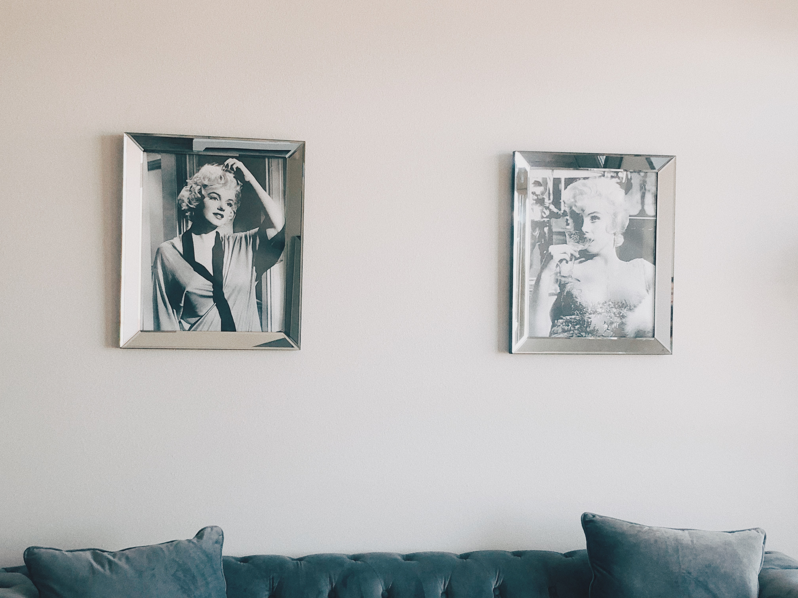
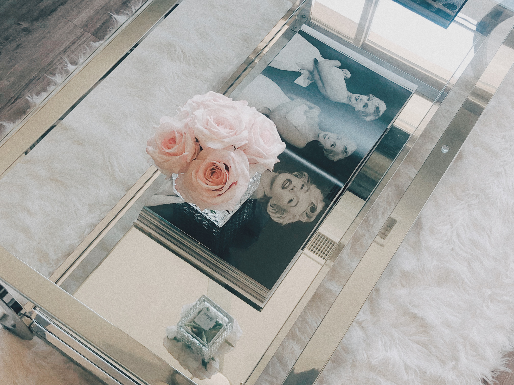
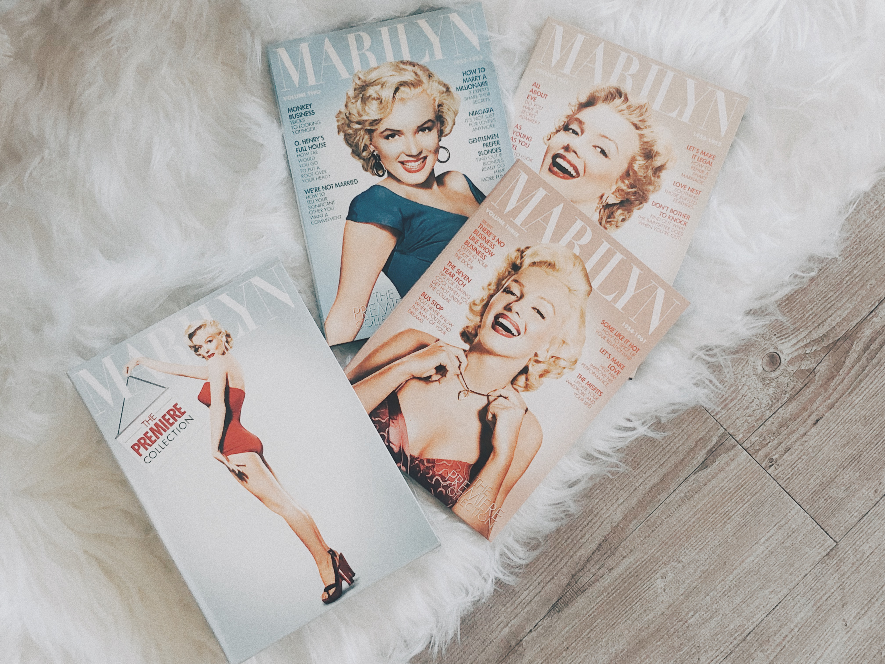
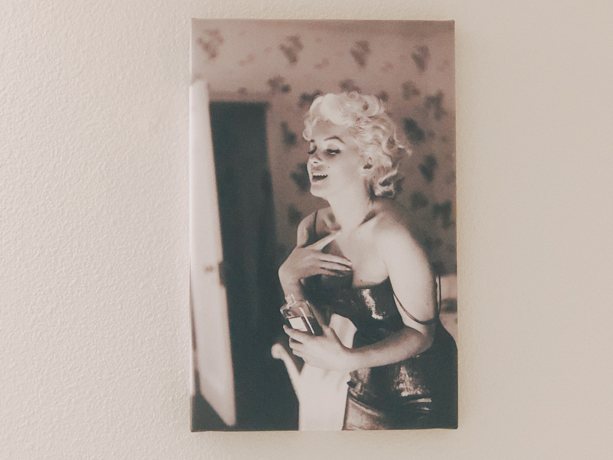

Ode To Marilyn Monroe
Over the past years I have given dozens of different answers to the question of why Marilyn Monroe continues to appeal to me
and the reaosns will continue to eveolve as time passes. I was in 5th grade when I first 'discovered' Marilyn, I admired how she was a rebel, how she was someone who went against
the grain in an era where women were pressured and told where their place was and not to have an opion. Knowing how she fought
so hard to better her life was both encouraging and inspiring. Raised an oprphan, she did not let her upbringing
put a stop to any dreams she may have had. In fact, if anything it made her all the more determined. Now that I am
a older, I can appreciate how marilyn was trying to push boundries and chnage the world. She fought not only for her own rights, but
for others too. Marilyn's star contunies to shine no matter how many years have past.
Here's an Ode to Marilyn Monroe :




Thank you for taking the time to visit my website!